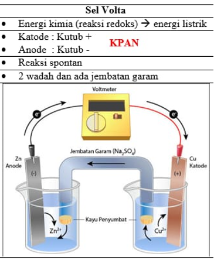

Sel Volta merupakan sel elektrokimia yang menghasilkan energi listrik diperoleh dari reaksi kimia yang berlangsung spontan. Beberapa literatur menyebutkan juga bahwa sel volta sama dengan sel galvani. Diperoleh oleh gabungan ilmuan yang bernama Alexander Volta dan Luigi Galvani pada tahun 1786. Bermula dari penemuan baterai yang berasal dari cairan garam.
Pada sel Volta terdapat elektroda yang berfungsi menghantarkan aliran listrik antara sel dengan lingkungan dan biasanya dicelupkan dalam elektrolit yang terlibat dalam reaksi. Elektroda dibagi menjadi dua jenis yakni Anoda dan Katoda:
Contoh reaksi redoks spontan dalam sel volta:
| Reaksi | Tipe |
|---|---|
| Zn → Zn²⁺ + 2e⁻ | Oksidasi |
| Cu²⁺ + 2e⁻ → Cu | Reduksi |
| Zn + Cu²⁺ → Zn²⁺ + Cu | Redoks |
Pada reaksi tersebut, setengah sel oksidasi terdiri dari batang seng (Zn) sebagai anoda yang dicelupkan ke dalam elektrolit Zn²⁺. Setengah sel reduksi terdiri atas batang tembaga (Cu) yang dicelupkan ke dalam elektrolit Cu²⁺.
Pada reaksi di atas, terdapat jembatan garam yang berfungsi untuk mengatasi hambatan yang terjadi karena pelepasan elektron dari masing-masing anoda dan katoda. Jembatan garam akan menarik ion-ion yang berlebih dalam kedua setengah-sel.
Dikarenakan listrik yang dihasilkan harus melalui reaksi kimia yang spontan, maka pemilihan dari larutan elektrolit harus mengikuti kaedah deret volta. Deret volta didapat dari data potensial elektroda standar:
| Setengah Reaksi Reduksi | E0red (V) |
|---|---|
| Li | -3,05 |
| Na | -2,71 |
| H2 + 2OH⁻ | -0,83 |
| Zn | -0,76 |
| Fe | -0,44 |
| N2H5⁺ | -0,23 |
| H2 | 0 |
| Cu | +0,34 |
| 4OH⁻ | +0,40 |
| Fe²⁺ | +0,77 |
| Ag | +0,80 |
| NO + 2H2O | +0,96 |
| Mn²⁺ + 2H2O | +1,23 |
| 2Cl⁻ | +1,67 |
| 2F⁻ | +2,87 |
Urutan ion-ion berdasarkan peningkatan nilai potensial elektroda standar disebut deret volta. (Semakin kiri akan mudah teroksidasi dan semakin kanan makin mudah tereduksi):
Li⁺, K⁺, Ba²⁺, Ca²⁺, N⁺, Mg²⁺, Al³⁺, Zn²⁺, Cr²⁺, Fe²⁺, Cd²⁺, Co²⁺, Ni²⁺, Sn²⁺, Pb²⁺, H⁺, Cu²⁺, Hg⁺, Ag⁺, Pt⁺, Au³⁺.
Sel Volta dibedakan menjadi tiga jenis: